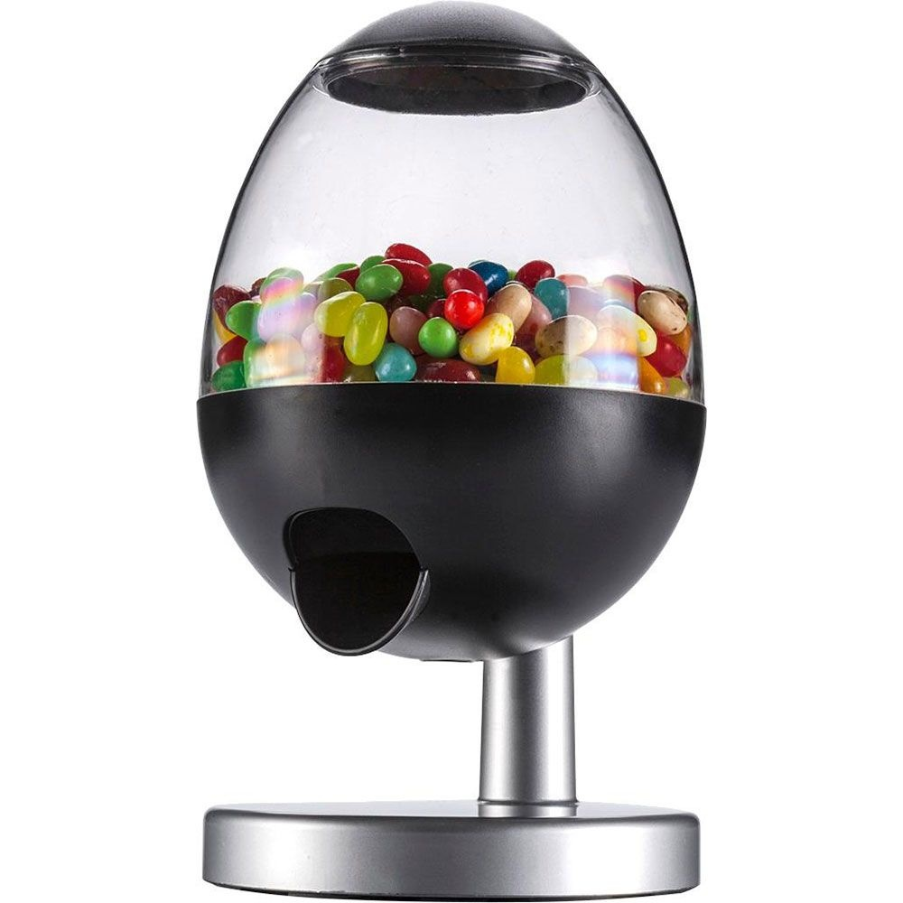

Ce projet est avant tout un prototype à l’aide d’une carte Arduino Uno et d’autres modules Arduino comme le Servomoteur et le Capteur Ultrason HC-SR04. Ce projet ce compose en plusieurs parties: le codage Arduino, les connectiques, l’assemblage du boîtier et le codage HTML/CSS/JAVA.
